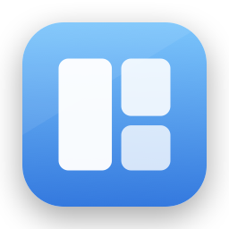

Zephr
The tiling window manager that feels like it shipped with the Mac.
All of i3. None of the hostility.
Real tiling
An i3-style tree: automatic layouts, splits, workspaces 1–9, focus by direction. New windows split the focused one along its longer edge — good layouts with zero commands.
Discoverable
Press the leader (⌥ Space) and a command strip shows what every key does. ? expands the full cheat sheet. The layer teaches you the direct chords as you go.
Never fights you
Dialogs, pickers, and utility panels float automatically. Screen-share bars and other overlays are never mistaken for windows. An app with a minimum size is believed and the layout works around it; an app that genuinely refuses tiling is learned and left alone. Drag a window and it floats for the drag, with drop zones to re-tile.
Layouts that survive real life
Unplug your monitor and everything migrates; plug it back in and every window returns to its exact workspace, position, and split ratio — across reboots too.
No compromises on trust
Public APIs only. No SIP changes, ever. Hardened Runtime. One permission (Accessibility), explained and auto-detected.
Never stalls
Every app gets its own isolated worker with strict deadlines — a hung app can never freeze window management for the rest of the system.
Install
Zephr is distributed outside the Mac App Store (window managers require APIs the App Store doesn't allow — see the FAQ).
From source
git clone https://github.com/binbandit/zephr.git
cd zephr
just app install # Release build → /Applications, launches itRequires Xcode and just (brew install just). Without just: build the Zephr scheme in Xcode and copy the app to /Applications.
DMG
just app dmg # dev-signed DMG for your own machines
just release # Developer ID + notarized (needs an Apple Developer account)First run — sixty seconds to tiled
- Welcome — one screen, one button.
- Accessibility permission — the one permission every window manager needs. Zephr detects the grant the moment it lands; nothing to restart. (Granted before but it's not sticking? See stale grants.)
- Pick your leader key — default ⌥ Space; Zephr suggests ⌃⌥ Space if Raycast is around.
- Interactive tutorial — drives your real windows (and opens two practice windows if your desktop is empty). Steps check themselves off as you do them.
Then: press the leader, hit 1–9 to switch workspaces, h j k l to focus, ⇧H J K L to move. Everything else is on the strip, and ? shows it all.
What you get
- Workspaces 1–9, per display — each monitor shows its own workspace; windows carry across display edges; re-press a workspace number to bounce back to the previous one.
- Multi-display commands - move focus to the next display, take the window with you, send the whole workspace over, or summon a workspace onto the screen you're looking at.
- The palette (⌃⌥P) - fuzzy-search every window and workspace, plus the everyday commands. Deterministic app switching by name.
- Display profiles — layouts are recorded per monitor arrangement and restored exactly on redock, relaunch, and reboot.
- Config file -
~/.config/zephr/config.toml, written with commented defaults on first run, hot-reloaded on save. A native Settings window edits the same file without touching your comments. Bind any key to any command with[[bind]]. Full reference. - Pause - one click releases every window and the keyboard for screen sharing or games; resume puts it all back. Or pause a single display and let the others keep tiling.
- zephrctl — a tiny CLI and event stream for scripting and SketchyBar. Reference.
- Quitting restores everything — every window returns to the exact frame it had before Zephr managed it.